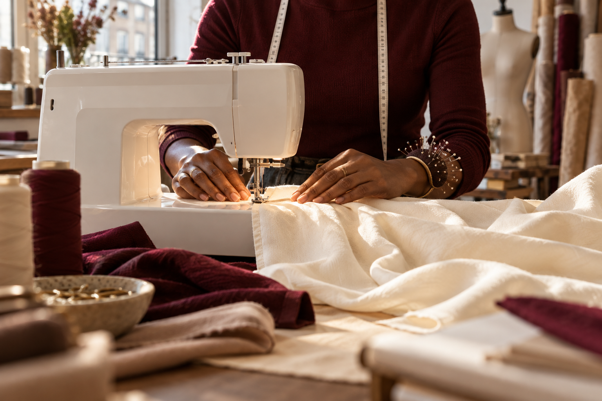

Retouches & ajustements
Vos vêtements, à votre mesure.
Un ourlet, une taille à ajuster, une pièce à réparer : retrouvons ensemble le plaisir de porter vos vêtements.

Le sens du détailUne attention
Une attention
à chaque étape.
- Ourlets de pantalons, jupes et robes
- Ajustements selon la coupe du vêtement
- Réparations et finitions à examiner en atelier
- Conseils lors de l’essayage
Les possibilités, disponibilités et modalités sont confirmées directement avec l’atelier.
Présenter mon projetPoussons la porte de l’atelierUne pièce à retoucher.
Contactez l’atelierUne pièce à retoucher.
Une idée à faire grandir.
Parlez-nous de votre envie. La suite se dessine ensemble.